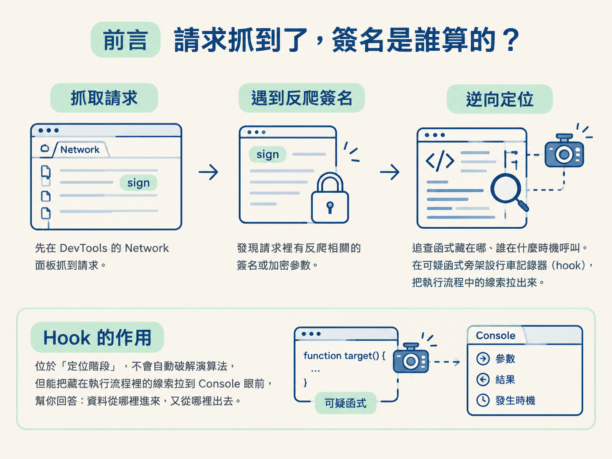
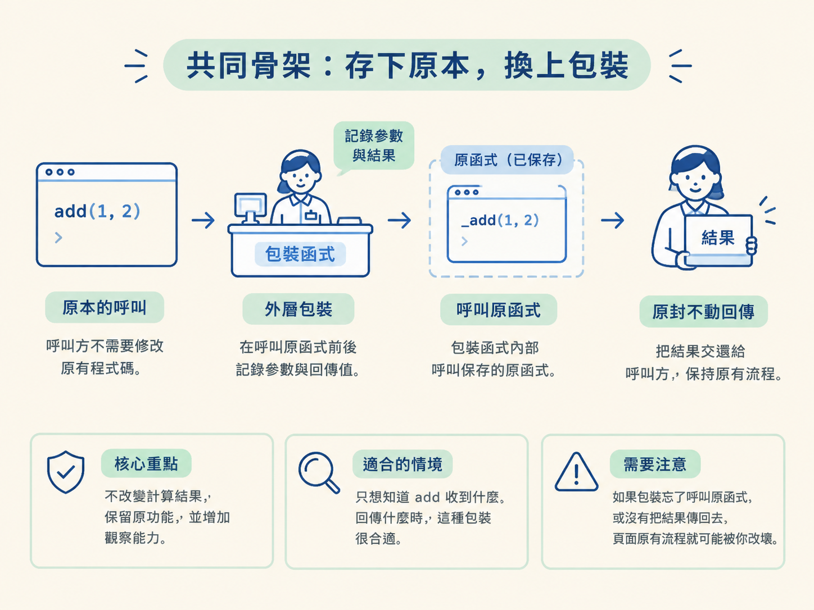
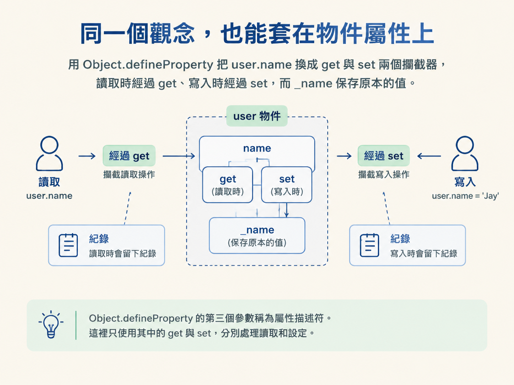
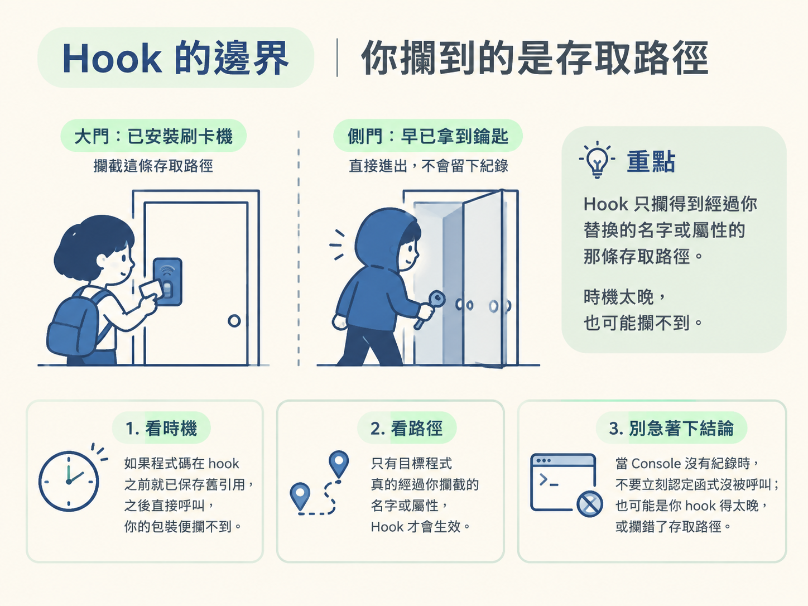

理解 hook 為什麼能攔到函式的輸入與輸出，並掌握「存下原本的、換上包裝」這個共同骨架。學完後，你會知道如何 hook 一般函式與物件屬性，也能判斷它適合用在什麼情況、又可能在哪裡失效。
逆向通常不是一開始就埋頭讀 JavaScript。比較常見的路線是：先在 DevTools 的 Network 面板抓到請求，發現請求裡有反爬相關的簽名或加密參數，再回頭追查它是怎麼產生的。
例如，你看到某個請求帶著 sign。你知道它可能由某個函式算出來，卻不知道函式叫什麼、藏在哪支 JS，也不知道是誰在什麼時機呼叫它。頁面載入的程式碼像一大捆纏在一起的電線，逐檔搜尋、逐行閱讀，常常看得眼睛發酸，還是找不到真正通電的那一條。
這時可以換個方向：與其一路追著程式碼找，不如在可疑的函式或屬性旁架一台「行車記錄器」。每當它被呼叫、讀取或寫入，就把參數、結果與發生時機記下來。這種攔截方式叫做 hook（掛鉤）。
在「抓取 → 遇到反爬 → 逆向定位」這條路線上，hook 位於定位階段。它不會自動替你破解演算法，但能把藏在執行流程裡的線索拉到 Console 眼前，幫你回答「資料從哪裡進來，又從哪裡出去」。

前置條件：你應該已經會使用 DevTools 的斷點與呼叫堆疊，並理解函式及物件屬性的基本語法。
Hook 是一種攔截並調整函式、方法或屬性行為的技術。它可以在原函式執行前後插入自己的邏輯，也能整段替換原本的實作。框架與外掛會用它擴充功能；進行逆向時，我們則用它觀察程式實際怎麼跑。
許多加密參數之所以難追，不一定是因為演算法太難，而是因為不知道參數從哪裡來、經過哪些函式，又在哪裡變成最後的結果。Hook 能把這條看不見的路線留下紀錄，讓程式執行一次，就交出一份參數與回傳值的日誌。
它適合用在你已經鎖定可疑函式、方法或屬性，想觀察實際輸入與輸出的時候。如果連目標在哪個物件、哪條存取路徑都還不知道，hook 就沒有明確的下手點；此時仍要先靠 Network、搜尋、斷點或呼叫堆疊縮小範圍。
大多數 hook 都有同一個核心：先保存原本的內容，再把原本的名字指向一層包裝。
以函式來說，包裝會先記錄傳入的參數，再呼叫保存下來的原函式。原函式算完後，包裝記錄回傳值，最後把結果原封不動地交還給原本的呼叫方。
先看一個普通函式：
function add(a,b){
console.log("add方法正在执行");
return a+b;
}接著保存原函式。這一步像是先留一把備用鑰匙，否則換上包裝後，就沒有辦法再回頭執行原本的邏輯：
_add = add;最後，把 add 換成負責記錄的包裝函式：
add = function(a,b){
console.log("原函数调用前, 参数：", a, b);
let result = _add(a,b)
console.log("原函数调用后, 结果：", result);
return result;
}現在，原本呼叫 add(1,2) 的程式碼完全不必修改，卻會在 Console 留下參數與結果。對呼叫方而言，櫃台還是那個櫃台；只是櫃台外多了一位會登記進出資料的人。
這種寫法的重點不是改變計算結果，而是保留原功能，同時增加觀察能力。如果你的目標只是知道 add 收到什麼、回傳什麼，這種包裝很合適；如果包裝忘了呼叫原函式，或沒有把結果傳回去，頁面原有流程就可能被你改壞。

時機也很重要：hook 必須放在原函式定義之後。如果執行得太早，當下的 add 還不存在，保存下來的內容就會是 undefined，之後呼叫包裝時便會出錯。
假設你已經從 Network 的請求線索或斷點結果，鎖定一個名為 add 的可疑函式。接下來的問題不是它在哪裡宣告，而是：哪些程式碼會走到它？實際傳入的資料又是什麼？
下面的 demo 裡，數個函式彼此呼叫，最後會走到作為加密函式示意的 add：
function a(){
console.log('a');
}
function b(){
console.log('b');
add();
a();
}
function c(){
console.log('c');
b();
}
function add(a,b){
// 加密函数
return a + b;
}
_add = add;
add = function (a, b){
console.log('原函数执行前，参数',a,b);
let result = _add(a, b) // 执行原函数
console.log('原函数执行后，结果', result)
return result
}把這段放進頁面執行，再觸發會走到 add 的頁面行為，Console 就會留下每次呼叫的參數與結果。原本要靠反覆讀碼推測的資料流，現在變成能直接觀察的執行紀錄。
這正是 hook 在逆向裡最典型的用途：已經鎖定目標後，讓目標函式主動回報入口、參數與結果。如果還需要知道是哪一行呼叫它，則可以把 hook 的紀錄和 DevTools 的斷點、呼叫堆疊一起使用，而不是只看 Console 猜測。
函式會「被呼叫」，屬性則會「被讀取」或「被設定」。因此，屬性 hook 不會換上一個普通函式，而是分別準備 get 與 set，攔住讀寫兩個方向。
先從這個物件開始：
let user = {
"name": "波波",
};JavaScript 提供 Object.defineProperty，可以重新定義屬性的存取方式。下面的程式先保存 name 原本的值，再把後續讀寫導向新的 get 與 set：
//1、创建一个对象
let user = {
"name": "波波",
};
//2、保存原属性
_name = user.name;
//3、对象属性的hook
//defineProperty函数用来重新定义对象的属性。
//参数1：对象。参数2：属性。参数3：属性描述符
Object.defineProperty(user, "name",{
get(){ // 获取属性值的时候执行
console.log("正在获取属性值");
return _name;
},
set(value){ // 设置属性值的时候执行
console.log("正在设置属性值:", value);
_name = value;
}
});
//4、获取属性和设置属性操作
console.log(user.name)
user.name = 'Jay'
console.log(user.name)這段程式與函式 hook 的精神完全相同。_name 保存原本的值；get 與 set 則是換上的包裝。之後只要有人讀取 user.name，就會經過 get；有人寫入新值，就會經過 set。
Object.defineProperty 的第三個參數稱為屬性描述符。這裡只使用其中的 get 與 set，分別處理讀取和設定。

屬性 hook 還有一個很實用的特性：即使屬性原本不存在，也能先把它定義出來。
下面的 user 原本沒有 age。程式先把預設值放進 _age，再建立一個能攔截讀寫的 age 屬性：
//2、保存原属性
_age = 18;
//3、对象属性age的hook
Object.defineProperty(user, "age",{
get(){
console.log("正在获取属性值");
return _age;
},
set(value){
console.log("正在设置属性值:", value);
_age = value;
}
});這在後續補環境時很有用。當一段移入其他環境的腳本不斷讀取某個不存在的屬性，你可以先把那個屬性做成觀察點，看看腳本何時讀它、寫入什麼，又期待得到什麼。
但這不是用來隨意猜測環境的捷徑。若連腳本要存取哪個屬性都不知道，仍然要先從錯誤訊息、斷點或程式碼找到具體目標，再決定要不要 hook。
| 函式 hook | 屬性 hook | |
|---|---|---|
| 攔截對象 | 函式呼叫 | 屬性的讀取與設定 |
| 保存原本內容 | _add = add | _name = user.name |
| 換上的包裝 | 新的 function | defineProperty 的 get／set |
| 可觀察資料 | 參數、回傳值 | 讀到的值、寫入的值 |
| 目標不存在時 | 不能直接攔，函式必須先存在 | 可以先定義屬性再攔截 |
| 適合時機 | 已鎖定可疑函式，想追輸入與輸出 | 已鎖定可疑屬性，想追資料何時被讀寫 |
Hook 並不是在整個 JavaScript 世界裡攔住某段邏輯。上面的做法改變的是 add 或 user.name 這條存取路徑之後會連到什麼。
如果某段程式碼在 hook 之前，就已經把原函式保存到自己的變數裡，之後又直接呼叫那個舊引用，你換上的包裝便攔不到。這就像你在大門加裝刷卡機，但有人早已拿著另一扇側門的鑰匙進出；大門的紀錄自然不會出現他的足跡。
因此，hook 能不能生效，取決於兩件事：時機是否夠早，以及目標程式是否真的經過你攔截的名字或屬性。當 Console 沒有任何紀錄時，不要立刻認定函式沒被呼叫；也可能是你 hook 得太晚，或攔錯了存取路徑。

Hook 的核心不是「破解」，而是「觀察」。先從 Network 或斷點找到可疑目標，再保存原本的函式或值，換上一層會回報資料、同時維持原功能的包裝。
函式 hook 觀察呼叫參數與回傳值；屬性 hook 透過
Object.defineProperty的get／set觀察讀寫，甚至能先替不存在的屬性設下觀察點。兩者都建立在同一個觀念上：讓原本看不見的資料流，在程式實際執行時留下足跡。
目前的例子都是頁面自行定義的內容。真正的目標站也可能把編碼、解碼交給瀏覽器原生函式，例如 atob，而且它可能在你打開 DevTools 前就已經執行。下一節要處理的，就是如何在頁面程式碼執行以前，先把這些原生 API hook 起來。